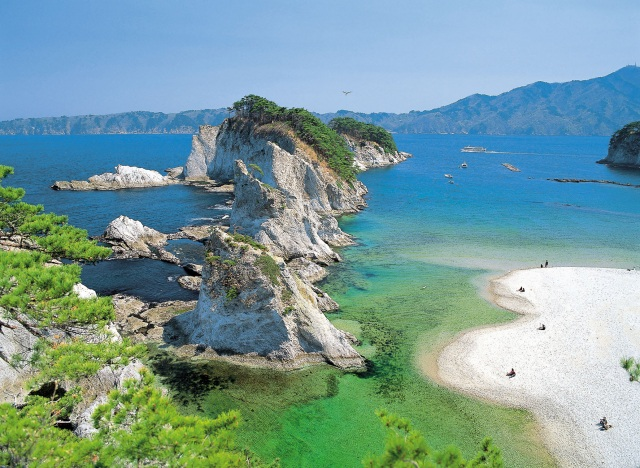
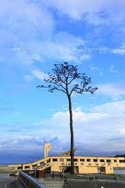
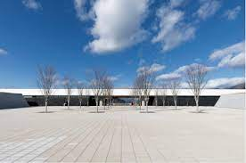

~さながら極楽浄土のごとし~

まず最初に紹介するのは、鋭くとがった白い流紋岩が林立し、一つ一つ違った表情を見せて海岸を彩る「浄土ヶ浜」です。
浄土ヶ浜の岩肌は、5200万年前にマグマの働きによりできた流紋岩りゅうもんがんという火山岩で、
二酸化ケイ素を多く含むため白い色をしていると考えられています。
また、マグマが流れた模様「流理構造りゅうりこうぞう」やマグマが急に冷やされたときにできた
板状の割れ目「節理せつり」を観察することができます。
浄土ヶ浜の地名は、天和年間(1681〜1683)に宮古山常安寺七世の霊鏡竜湖(1727年没)が、
「さながら極楽浄土のごとし」と感嘆したことから名付けられたと言われています。
一年中いろいろな景色を見れるので個人的にとてもおすすめです。
~復興のシンボル~

2つ目に紹介するのは東日本大震災の津波に耐えた「奇跡の一本松」です。この奇跡の一本松は樹齢173年(2012年に枯死)で
高さ27.7mのアイグロマツという品種の松です。
大震災前は2㎞にもわたって密集していた松林は一本を残して跡形もなくなってしまいました。実はこの一本松、
海水をかぶったため根が腐り立ち枯れ今は復興の象徴として防腐処理などを行いモニュメントとして永久保存されることになっています。
~後世へ伝承していくために~

3つ目に紹介するのは「東日本大震災津波伝承館~いわてTSUNAMIメモリアル~」です。
「命を守り、海と大地と共に生きる」を展示のテーマをもとに三陸の津波災害の歴史や、
東日本大震災津波や復興の取組に関わる写真や映像、被災物などが展示されており
東日本大震災津波の悲劇をくり返さないため、震災の事実と教訓を後世に伝承するとともに、
復興の姿を国内外に発信することを目的とする建物で、
先ほど紹介した奇跡の一本松もこの建物から見ることができます。